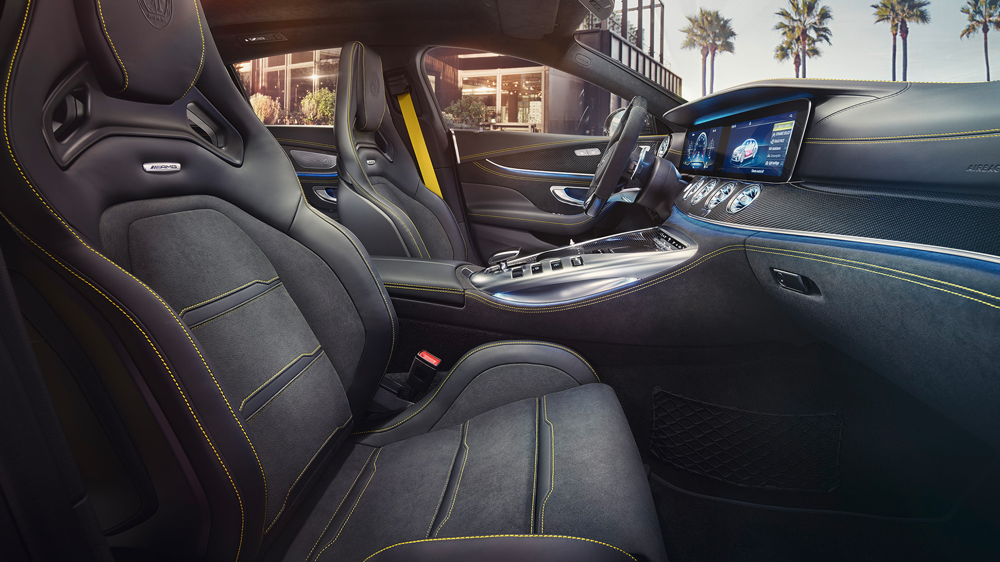

Tel: +49 89 1206 1180
Tel: +49 89 1206 1180
The Mercedes-AMG GT 63 S 4MATIC+ 4-Door Coupé fully represents the design philosophy of AMG: sensual purity, striking proportions and a voluminous body. More space, more power, more goose bumps – the new Mercedes-AMG GT 4-Door variant delivers new dimensions of driving results. It is clear to which performance family this sports car is attributed to. The motorsport DNA is in every fibre of the coupé and makes the four-door vehicle a pure-bred sports car.
Driving dynamics at motorsport level, explosive sprints, maximum comfort. The Mercedes-AMG GT 63 S 4MATIC+ 4-Door Coupé marks the top spot of the four-door model range. Its dynamic AMG engine mounts guarantee the best-possible connection of the 470 kW (639 hp) strong engine to the body in any handling situation. Especially with a sporty driving style the electronically controlled AMG locking differential enables improved acceleration from corners. The four-door coupé not only shoots from 0 to 100 km/h in 3.2 seconds: thanks to the additional RACE drive program including Drift Mode it also enables sporty driving manoeuvres. And the striking front in jet wing design with trim element makes it clear the first time you set your eyes on it: this is a Mercedes-AMG GT 4-Door Coupé.
The cockpit convinces with extremely high-grade materials and production quality. The new AMG fragrance delivers additional performance for your senses. Thanks to the new auxiliary switches on the AMG Performance steering wheel in nappa leather you are firmly in control of everything: change various parameters of your sports car and configure your personal setup. Thanks to the individually configurable instrument cluster and the central media display with 12.3-inch colour display you always have all relevant information at hand. New and unique: eight display buttons that have been integrated into the centre console and a switch element in the operating panel.
